리뷰 리포트

Review Report국내 홈쇼핑 방송 시장 현황
및 비즈니스 전략 변화
노희윤
(정보통신정책연구원 방송미디어연구본부 전문연구원)
-
코로나19 발생 이후 모바일을 포함한 온라인 중심의 쇼핑행태가 증가한 것에 기인하여 국내 홈쇼핑방송매출의 성장세는 둔화되고 있다. 국내 온라인 쇼핑액 규모는 빠른 속도로 증가하고 있으며, 네이버, 카카오, 쿠팡, 배달의 민족 등 온라인 플랫폼사업자들 또한 라이브커머스 포함한 디지털커머스 시장으로의 진출을 가속화하고 있다. 이러한 추세에 맞추어 홈쇼핑사업자들은 라이브커머스 콘텐츠 제작을 확대하고모바일 전용 프로모션 등을 출시하며 비즈니스 전략을 변화시켜 나가고 있다. 이러한 추세에 따라 국내 라이브커머스 시장은 확대되는 반면, 시장 내의 경쟁 구도는 심화될 것으로 전망된다.
-
1들어가며홈쇼핑방송은 유료방송플랫폼(종합유선방송, IPTV, 위성방송)을 통해 상품소개와 판매에 관한 전문화된 프로그램을 편성·제공하는 방송으로, 실시간 방송을 통한 TV홈쇼핑과 인포머셜 홈쇼핑·양방향성에 기반한 데이터홈쇼핑(T-Commerce)으로 구분된다.
1995년 국내에 처음으로 도입된 홈쇼핑방송은 이후 지속적으로 사업자 수와 사업규모를 확장해 나가며 국내 방송시장에도 큰 영향을 미치고 있다(2021년 기준 홈쇼핑사업자 수 12개, 전체 방송채널사용사업자 방송사업매출 대비 홈쇼핑사업자의 매출 비중 63.7%). 2020년 코로나19 발생 이후, 국내에서 언텍트 소비가 확산되고 국내 온라인 플랫폼(네이버, 카카오, 쿠팡, 배달의 민족 등)이 이커머스(E-commerce)와 라이브커머스로 진출을 본격화 하면서 홈쇼핑사업자 또한 홈쇼핑방송의 범주에서 벗어나 다각도로 사업영역을 확장하며 비즈니스 모델을 변화해 나가고 있다.
본 고에서는 이러한 시장 변화의 흐름을 바탕으로, 국내 홈쇼핑 시장의 현황과 매출 구조의 변화를 분석하고 진화하는 홈쇼핑사업자의 비즈니스 전략을 살펴보고자 한다.표 1홈쇼핑방송 유형과 방식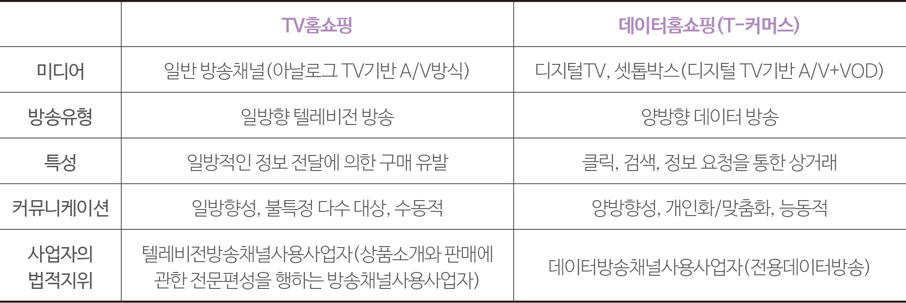출처: 정보통신정책연구원(2018), 『국내 홈쇼핑 산업에 대한 분석과 제도적 개선방안에 관한 연구』재가공
-
2국내 홈쇼핑 시장 현황 및 매출 구조의 변화
2.1. 국내 홈쇼핑사업자 현황
국내에서 사업을 영위하는 홈쇼핑사업자는 총 12개사로, 라이브방송 기반의 TV홈쇼핑 7개사, 데이터방송 기반의 데이터홈쇼핑(티커머스) 5개사가 포함된다. TV홈쇼핑 7개사 중 5개사(씨제이이앤엠, 지에스리테일, 엔에스홈쇼핑, 우리홈쇼핑, 현대홈쇼핑)는 라이브홈쇼핑 채널과 데이터홈쇼핑 채널을 모두 송출하며 사업을 겸하고 있다.
국내 홈쇼핑 시장의 규모가 확대되고 환경이 빠르게 변화하면서 국내 홈쇼핑사업자 중 일부는 법적 분할, 인수 합병 등을 진행해왔다. 2010년 씨제이오쇼핑의 미디어 부문을 인적 분할하여 종합 엔터테인먼트 회사를 설립했던 씨제이이앤엠(CJ E&M)은 글로벌 시장에서의 경쟁력 확보와 인프라 공유를 위해 2018년 7월 씨제이오쇼핑과 다시 흡수합병하며 CJ ENM법인을 출범하였다. 2015년 IPTV사업자인 SK브로드밴드가 런칭한 데이터홈쇼핑채널 ‘B쇼핑’은 양방향 서비스 개발과 고객 맞춤형 서비스 확대를 위하여 2017년 SK스토아(SK stoa)라는 사명으로 법적 분할하며 데이터홈쇼핑 사업에 투자를 확대하였다. 2021년 7월 GS홈쇼핑은 커머스와 유통분야의 시너지 극대화를 위해 GS리테일과 흡수합병하며 신사업인 ‘퀵커머스’ 분야에 적극적으로 투자를 진행하는 등 유통부문에서의 전략을 강화하고 있다.
2021년 기준 국내 홈쇼핑방송매출에서 사업자별 점유율을 살펴보면, 우리홈쇼핑과 현대홈쇼핑이 각 16.9%, 16.8%로 높은 점유를 보이고 있으며, 뒤이어 씨제이이앤엠(14.7%)과 지에스리테일(12.2%)이 많은 비중을 차지하였다. 최근 4년간(2018년~2021년) 홈쇼핑방송매출에서 가장 높은 성장률을 보인 TV홈쇼핑 사업자는 홈앤쇼핑(CAGR 11.7%)이나, TV홈쇼핑 7개사의 연평균 성장률은 마이너스 성장을 기록하였다(CAGR -0.6%).
표 2국내 홈쇼핑사업자 현황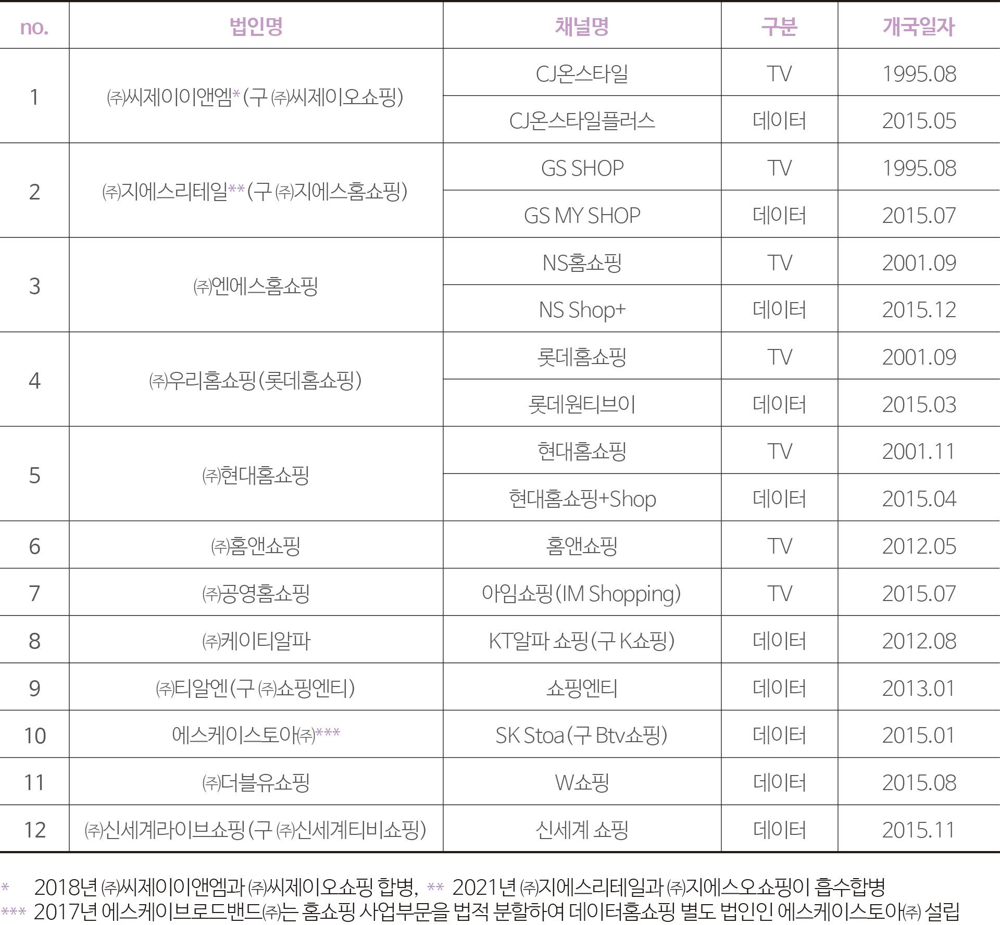출처: 과학기술정보통신부 방송채널사용사업자 승인등록현황(2021년 12월 31일 기준)
그림 1TV홈쇼핑사업자별 홈쇼핑방송매출 점유율(전체 홈쇼핑방송매출 대비)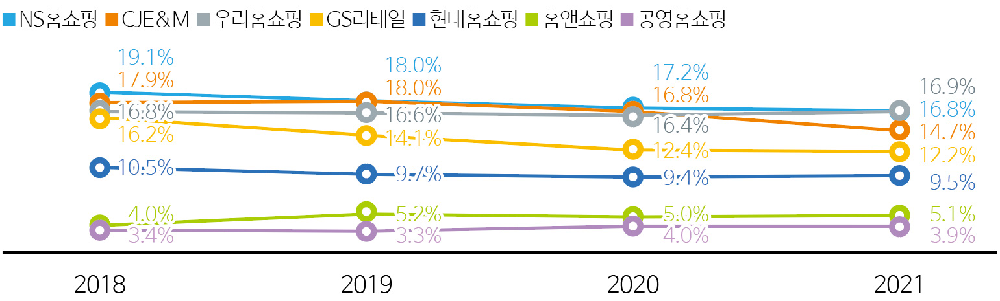출처: 방송통신위원회, 『방송사업자 재산상황 공표집』각 연도
그림 2데이터홈쇼핑사업자별 홈쇼핑방송매출 점유율(전체 홈쇼핑방송매출 대비)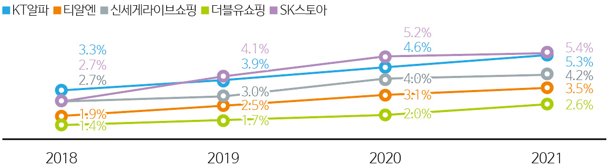출처: 방송통신위원회, 『방송사업자 재산상황 공표집』각 연도
홈쇼핑사업의 후발주자인 데이터홈쇼핑(티커머스)사업자는 지속적인 투자 확대와 사업규모 확장으로 동기간 홈쇼핑방송매출 23.7%의 높은 성장률을 보였다. 데이터홈쇼핑사업자 5개사 중 에스케이스토아와 케이티알파는 2019년 점유율이 역전(에스케이스토아 4.1%, 케이티알파 3.9%)되었으며, 2021년 기준 에스케이스토아가 데이터홈쇼핑 중 가장 높은 점유를 차지(5.4%)하였다. 그러나 케이티알파(5.3%)와의 점유율 차이는 크지않아 데이터홈쇼핑의 선두권 경쟁이 치열한 것으로 예상된다.
2.2. 국내 홈쇼핑 시장 현황
2021년 기준 국내 홈쇼핑방송으로 발생한 매출의 규모는 약 3조 8,193억 원으로 꾸준히 3조원 대의 매출을 기록하고 있으나, 성장률은 점차 둔화(2018년~2021년 CAGR 3.0%)되는 양상을 보이고 있다. 2018년 전체 홈쇼핑방송매출에서 87.9%까지 차지했던 TV홈쇼핑은 홈쇼핑방송매출의 역성장(CAGR –0.6%)으로 2021년 79.0%까지 점유율이 축소된 반면, 데이터홈쇼핑의 경우 급 성장세(CAGR 21.0%)를 나타내며 2018년 12.1%에서 2021년 21.0%까지 비중이 확대되었다.
그림 3국내 홈쇼핑방송매출 규모 및 점유율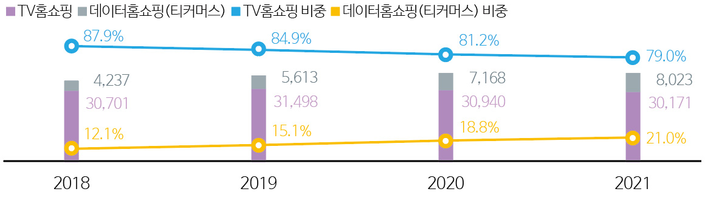출처: 방송통신위원회, 『방송사업자 재산상황 공표집』각 연도
데이터홈쇼핑의 성장으로 국내 홈쇼핑방송매출은 지속 성장하고 있음에도 불구, 아직까지 홈쇼핑방송매출에서 큰 비중을 차지하는 TV홈쇼핑의 홈쇼핑방송매출 역성장이 전체 홈쇼핑방송매출 성장률 둔화에 영향을 미치고 있는 것으로 보인다. 그러나 홈쇼핑사업자의 전체 매출(방송사업매출+기타사업매출)을 살펴보면, 2018년~2021년 6.0%(TV홈쇼핑 3.4%, 데이터홈쇼핑 27.2%)의 성장을 나타내고 있다. 이는 실시간 방송을 통한 상품판매 매출 성장은 둔화된 반면, 온라인과 모바일을 통한 구매가 증가하며 기타사업매출이 성장했기 때문이다. 이에 따라 국내 홈쇼핑사업자의 전체 매출 대비 홈쇼핑방송매출이 차지하는 비중은 2018년 64.3%에서 2021년 59.1%로 감소하였으며, TV홈쇼핑사업자가 데이터홈쇼핑사업자보다 전체 매출 대비 기타사업매출이 더욱 큰 것으로 나타났다(2021년 기준 TV홈쇼핑 기타사업매출 비중 46.6%, 데이터홈쇼핑 기타사업매출 비중 40.8%).
그림 4국내 홈쇼핑사업자의 전체 매출 대비 홈쇼핑방송사업매출 점유율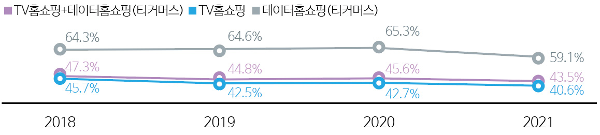출처: 방송통신위원회, 『방송사업자 재산상황 공표집』각 연도
3국내 홈쇼핑사업자의 비즈니스 전략 변화3.1.소비자의 소비행태 변화
통계청의 온라인쇼핑동향조사에 따르면 국내 온라인 쇼핑액 규모는 2018년 약 113조 원에서 2021년 약 187조 원으로 연평균 18.2%의 성장을 나타냈다. 특히 모바일 쇼핑액 규모와 비중은 빠르게 증가(CAGR 25.1%)하여 2021년 전체 온라인 쇼핑액 대비 72.4%를 차지, 약 136조의 규모를 형성하였다. 이처럼 모바일과 인터넷을 포함한 온라인 쇼핑 이용이 증가하고 특히 2020년 코로나19 발생 이후 언텍트 소비가 확산되면서 동일한 홈쇼핑 상품이라고 하더라도 전통적 방식의 구매방식(유선전화를 통한 홈쇼핑 상품 구매)보다 스마트폰 앱을 통한 모바일 구매가 증가하고 있음을 시사한다.
그림 5온라인쇼핑(인터넷쇼핑+모바일쇼핑) 규모 추이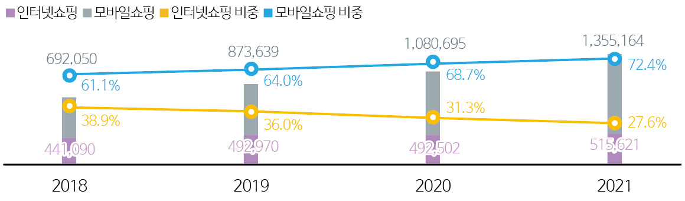출처: 통계청, 『온라인쇼핑 동향』각 연도
3.2.라이브커머스1 시장으로의 진출 가속화
라이브커머스를 포함한 디지털커머스 시장의 경쟁 강도는 줄어들지 않고 있다. 소비자의 소비행태가 오프라인에서 온라인 비대면을 중심으로 변화함에 따라 기존 홈쇼핑사업자들은 디지털커머스로 서비스 형태 전환을 가속화하고 있다. 또한 홈쇼핑사업자 뿐 아니라 모바일 앱에서 대규모의 이용자를 보유하고 있는 네이버2, 카카오, 쿠팡, 배달의 민족 등 온라인 플랫폼사업자들이 각 플랫폼별 서비스를 차별화하며 디지털커머스 시장에 진출, 투자를 적극적으로 확대해 나가고 있는 추세이다.
국내에서 디지털커머스 사업을 영위하는 사업자들은 라이브커머스 진출도 본격화 하였는데, 인플루언서들과의 적극적인 협업을 통해 다양한 품목에서의 라이브커머스를 진행하며 라이브홈쇼핑과 유사한 서비스를 소비자에게 제공하고 있다. 라이브커머스는 스마트폰을 통해 간편하게 시청할 수 있다는 장점과 동시에 “실시간”과 “쌍방향(양방향) 소통”이 가능하기 때문에 젊은 연령층 사이에서 이용이 점차 증가하고 있는 것으로 추산된다. 라이브커머스 시장이 확대됨에 따라 네이버는 중소상인의 라이브커머스 진출이 용이할 수 있도록 관련 교육 및 지원 프로그램을 운영하고 있으며, 쇼핑라이브 전용 스튜디오를 구축하여 관련 콘텐츠를 지속 개발하고 있다. 카카오의 경우, 2020년 10월 ‘카카오쇼핑라이브’를 출시한데 이어 라이브커머스 플랫폼인 ‘그립컴퍼니’를 인수하며 국내 시장을 넘어서 해외 라이브커머스 시장으로의 진출을 계획하고 있다.
- 라이브커머스란 홈쇼핑방송과 유사하게 실시간으로 판매가 진행되지만, 모바일로 간편하게 접근할 수 있다는 점과 댓글로 소비자가 직접 소통할 수 있다는 장점이 있으며 모바일 동영상 콘텐츠에 익숙한 MZ세대를 중심으로 이용이 증가하고 있음
- 네이버 전체 매출 대비 커머스 사업부문 매출 비중 2020년 말 20.5%(1조 896억) → 2021년 21.6%(1조 4,751억) (네이버, 2021년 감사보고서)
표 3국내 주요 온라인 플랫폼사업자의 라이브커머스 운영 현황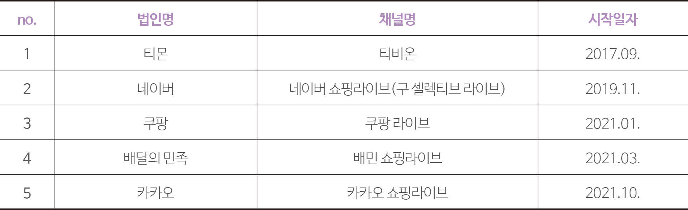출처: 각 사 홈페이지
그림 6네이버 쇼핑라이브 메인화면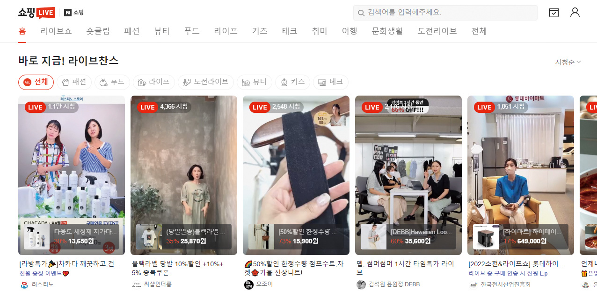출처: 네이버 쇼핑라이브 홈페이지(https://shoppinglive.naver.com/)
이에 따라 홈쇼핑사업자들은 홈쇼핑사업자들간의 경쟁이 아닌 라이브커머스 사업을 영위하는 온라인 플랫폼 사업자와의 경쟁 관계 구도가 형성되었다.
3.3.변화하는 국내 홈쇼핑사업자의 비즈니스 전략
모바일을 포함한 온라인에서의 소비행태 증가, 온라인 플랫폼사업자의 라이브커머스 진출 등으로 인한 경쟁구도 변화에 맞추어 국내 홈쇼핑사업자는 비즈니스 전략을 진화하며 디지털커머스 사업자로의 전환을 시도하고 있다. 라이브커머스는 방송 송출의 부담이 적고, 타겟 고객 설정이 가능하다는 점, 고객들은 스마트폰을 통해 간편하게 접속이 가능하다는 점, 채팅창을 통한 고객과의 양방향 소통이 가능하다는 점 등의 장점을 갖고 있어 홈쇼핑방송의 대체 서비스로 자리잡고 있다. 이러한 추세에 따라 국내 홈쇼핑사업자들은 라이브커머스를 통한 타겟 고객 대상 상품판매 전략 강화를 위하여 모바일 전용 브랜드를 런칭하고 인플루언서와의 콘텐츠 제작을 확대하는 등 투자를 가속화하며 디지털커머스 사업자로 변모하고 있다.
기존의 라이브홈쇼핑 채널을 운영해오던 TV홈쇼핑 7개사의 경우에는, 라이브홈쇼핑 방송상품 구매에 소극적3이었던 젊은 층의 고객을 유입하기 위한 방안으로 모바일 중심의 라이브커머스를 도입하여 점차 규모를 확대해 나가고 있다.
기존의 라이브로 홈쇼핑방송을 송출할 수 없었던 데이터홈쇼핑(티커머스) 사업자의 경우에는 모바일 라이브커머스를 통해 라이브 방송이 가능하기 때문에 라이브커머스 전용 스튜디오를 신설하고, 라이브커머스 플랫폼에 투자하는 등 적극적으로 본 시장에 뛰어들고 있다.
자사의 온라인 몰을 통한 판매·유통 확대, 모바일 라이브커머스로의 신규 고객 유입 등 국내 홈쇼핑사업자의 비즈니스 전략이 변화함에 따라 판매 채널별 상품 취급액의 비중 또한 달라지고 있다.- 2021년 기준 홈쇼핑채널 이용경험 20대 10.0%, 30대 21.2%, 40대 27.7%, 50대 32.6% (방송통신위원회, 2021년 방송매체이용행태조사)
표 4국내 홈쇼핑사업자의 라이브커머스 운영 현황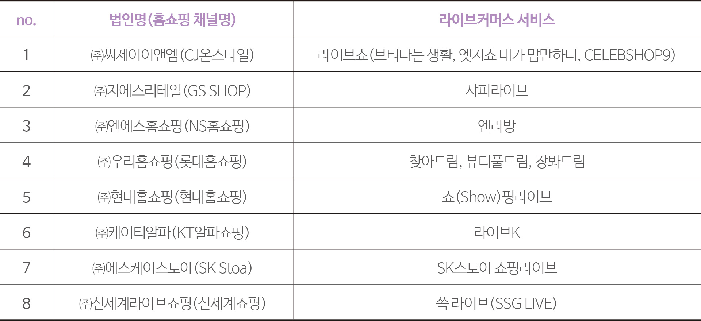출처: 각 사 홈페이지
홈쇼핑 상장사 중 3개사(씨제이이앤엠, 지에스리테일, 현대홈쇼핑)의 실적보고서를 통해 판매 채널별 취급액을 살펴보면, TV채널보다 디지털채널의 취급액 비중이 점차 증가하는 추세를 나타내고 있다. 2020년 1분기 기준 TV채널과 디지털채널의 비중은 각 46.4%(1조 4,321억 원), 51.4%(1조 5,876억 원)를 차지하였는데, 2021년 4분기 기준으로는 43.8%(1조 3,710억 원), 54.1%(1조 6,930억 원)로 그 격차가 확대되는 양상을 보였다.
그림 7홈쇼핑 상장사 3개사(CJE&M, GS리테일, 현대홈쇼핑)의 채널별 취급액 규모(단위: 억 원)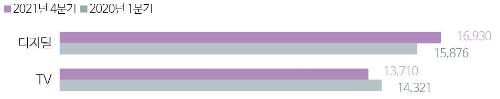출처: 각 사 분기별 실적보고서
이는 모바일을 중심으로 변해가는 쇼핑 환경에 대응하여 홈쇼핑사업자들의 모바일 상품 프로모션 확대, 자사PB 상품을 중심으로 한 온라인 유통·판매 증가, 라이브커머스 편성 확충 등에 기인한 것으로 예측된다.
비즈니스 모델 변화에 따라 앞으로 홈쇼핑사업자의의 매출 구조 또한 전체 매출 대비 홈쇼핑방송매출의 비중은 감소, 기타사업매출의 비중은 증가하는 추세가 지속될 것으로 전망된다.
-
4 마치며: 미디어와 인공지능국내 홈쇼핑 시장을 살펴보면, 홈쇼핑 방송상품을 통한 매출의 성장이 둔화되고 온라인과 모바일 앱을 통한 매출은 증가하는 양상을 보이고 있다. 2021년 홈쇼핑방송매출이 0.2% 성장에 머무른 반면, 홈쇼핑사업자가 유료방송사업자(IPTV, SO, 위성)에게 지급하는 홈쇼핑송출수수료는 11.2% 증가하여 홈쇼핑사업자들의 부담이 가중되는 상황이다. 홈쇼핑 송출수수료의 부담과 신규 고객 확보, 변화하는 쇼핑행태를 반영하기 위하여 홈쇼핑사업자들은 모바일을 포함한 온라인으로 활로를 변경하고 있다. 온라인을 통한 상품판매 유도를 위하여 그간 홈쇼핑 사업의 보조수단 성격이 강했던 온라인 몰을 개편·확장하며 홈쇼핑사업의 재성장을 위한 발판으로 삼고 있다. 또한 사업의 범위를 방송에만 국한하지 않고 디지털커머스 사업자로의 전환을 위하여 온라인몰과 모바일기반의 라이브커머스로의 진출을 본격화하며 수익 모델 다각화를 모색하고 있다. 네이버, 카카오와 같은 포털사와 쿠팡, 배달의 민족 등 이커머스 사업자들도 라이브커머스 시장 진출 및 투자가 확대되면서 국내 라이브커머스 시장의 규모는 점차 확대될 것으로 전망되나, 시장 내에서 온라인 플랫폼사업자와 홈쇼핑사업자 간의 경쟁이 심화되는 추세를 보이고 있어 이에 대한 귀추가 주목된다.
-
Reference
- 방송통신위원회, 『방송사업자 재산상황 공표집』각 연도
- 방송통신위원회(2021), 『2021년 방송매체이용행태조사』
- 정보통신정책연구원(2018), 『국내 홈쇼핑 사업에 대한 분석과 제도적 개선방안에 관한 연구』
- 통계청, 『온라인쇼핑동향조사』(국가통계포털 자료다운로드: 2022.07.18.) 각 연도
- 노희윤(2017), “통계로 보는 홈쇼핑방송 환경의 변화”, KISDI Stat Report 17-14
- 네이버(2022), 『2021년 감사보고서』
- 홈쇼핑사업자 12개사 각 사 홈페이지